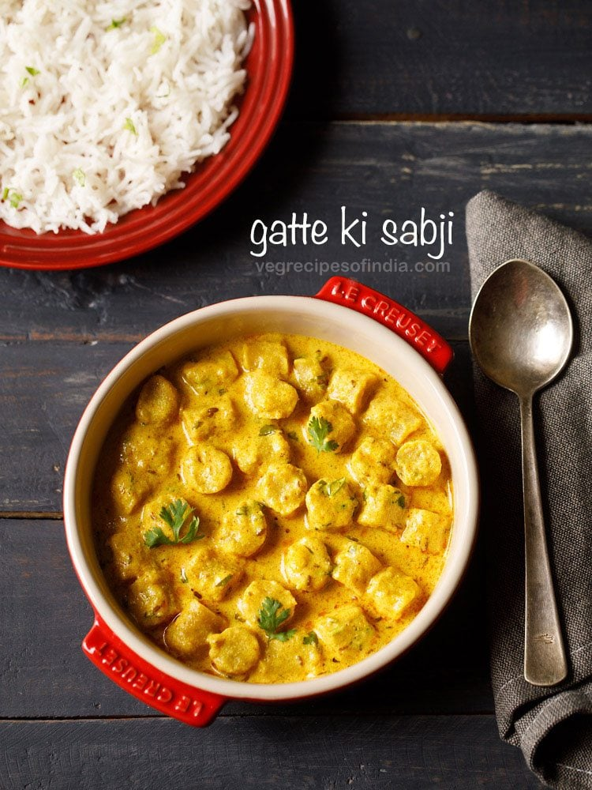
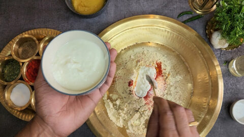
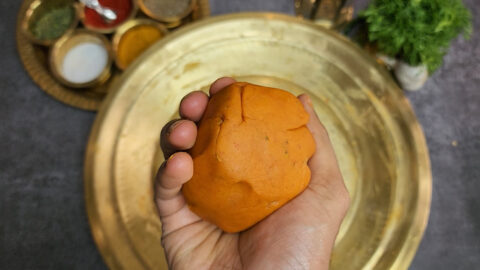
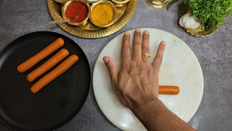
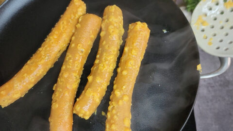
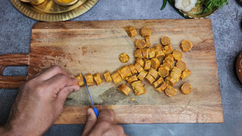
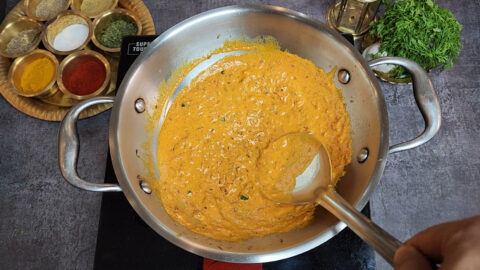
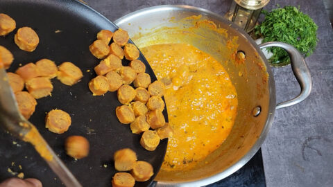
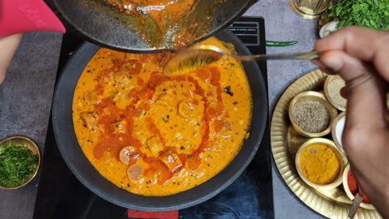
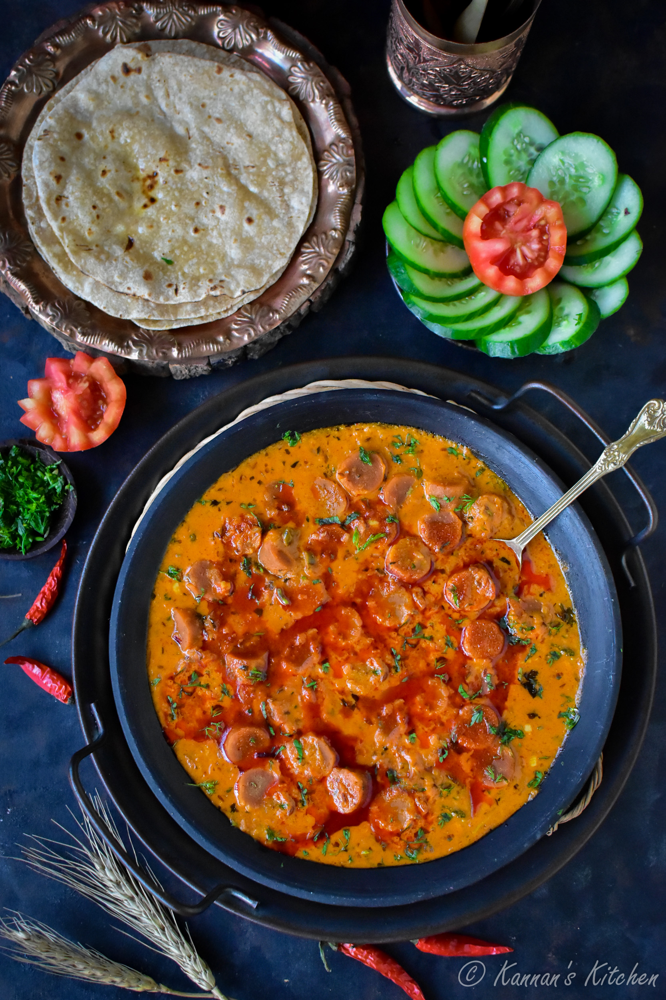

Back to Home
Back to Home

Gatte Ki Sabji is one of those many dishes, that is a part of the flavorful and versatile Rajasthani cuisine. This recipe is a popular gravy-based dish with gatta (plural: gatte), small gram flour (besan) roundels or dumplings that are added to a spiced curd (yogurt) gravy. There are many variations of making this delicacy from the cuisine of Rajasthan. It may differ from household to household, or even region to region in this beautiful north Indian state.
1.Add 3 tablespoons of curd, 1 tablespoon of ghee, a pinch of baking soda and 3 teaspoon of oil
2.Mix the besan well without adding any water in the initial stage. Curd, oil and ghee must be incorporated into the besan thoroughly. It should come together as a very stiff dough. and Stretch and knead the dough for 3 to 4 minutes.
3.Divide this dough in 4 equal portions.Roll each of the ball on a flat surface to shape them into cylinders. It should be roughly ¾ to 1 inch in thickness
4.For cooking gatte, take a kadai and heat 3 cups of water till it comes to a rolling boil. Now add the gatte one by one. Do not drop all of Gatte at once as it would drop the temperature of the water.Now drain the gatte from water. Reserve the stock which will be used in the gravy. Cool the gatte completely.
5.Cut the Gatte into discs (not too thin, roughly ½ inch in thickness) and For making the base of the gravy, take 1 cup of fresh curd and add ½ tsp of Turmeric Powder, 1½ tsp Kashmiri Red Chilli Powder, 2 tsp Dhaniya Powder, 2 tsp Besan, salt to taste and whisk well till it comes to a smooth paste.
6.Add a pinch of salt and cook on medium flame till the onion is golden brown in colour. Next add finely chopped garlic, ginger and green chillies. Sauté for couple of minutes.Now turn the flame to medium and add the curd mixture to kadai.
7.Once the curd is cooked and thickened a bit, add the reserved stock. Add another 1 cup of water or reserved stock to adjust the consistency of the gravy. Once the gravy comes to a boil again, add the chopped Gatte.
8.Cover and cook on medium flame for 5 to 6 minutes. Add ½ tsp of Garam Masala and garnish with fresh chopped coriander. For making double tadka, heat 1-2 tbsp of Ghee and keeping the flame low, add Kashmiri Red chilli powder and asafoetida. Add a dash of water and bring to boil.
9.Pour the tadka over the sabzi and garnish with some more coriander. Gatte ki sabzi is ready. Serve hot with phulka, roti or rice.
